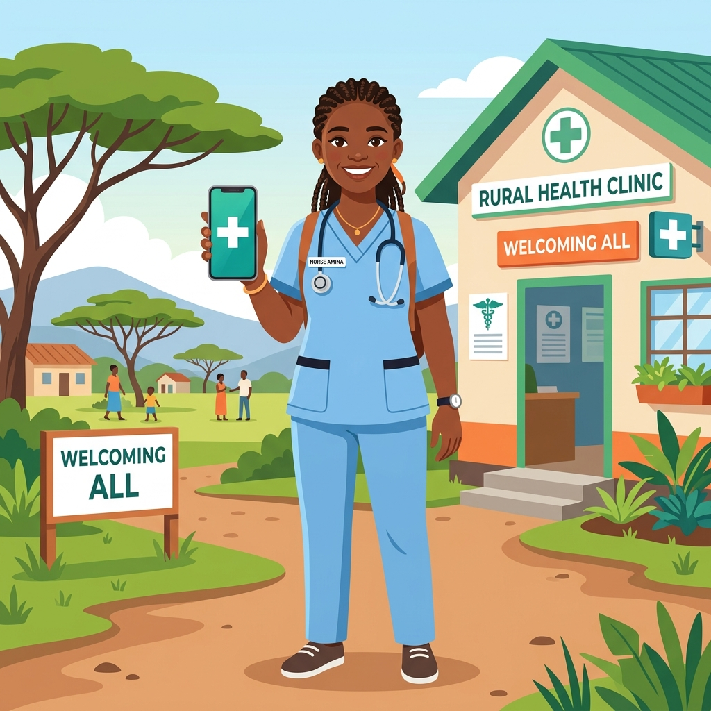

Participant Registration
Please complete your registration before proceeding with the training. This information is required for certification tracking and to ensure you have access to the data collection platform.

Module 1: The AI Mission – Closing the Diagnostic Gap
Amina’s experience is common in resource-limited settings. The SkinApp AI is being developed as a diagnostic support triage tool to assist frontline workers like Amina. It provides a differential diagnosis support, flagging potential Neglected Tropical Diseases (NTDs) for specialist referral.
The Critical Research Gaps
Your role as a specialist clinician is to provide the "Ground Truth" data required for training. We are currently seeking 1,200 high-resolution images with a focus on these missing priorities:
2. Clinical Spectrum: All leprosy clinical forms are welcome. We specifically need Indeterminate, Tuberculoid (TT/BT), and reaction statuses (ENL/Type 1) to build a robust diagnostic triage tool.
3. Universal Diversity: To ensure the AI is effective for all patients, we aim for as great a diversity as possible across all Fitzpatrick Phototypes (I-VI) and patient demographics.
Scenario: Amina uses the app and the AI suggests "92% Diagnostic Confidence: Borderline Lepromatous." What should Amina do next?
Module 2: Technical Photography Protocol
For an AI, the image is the lesson. Poor image quality results in a "noisy" training set that produces dangerous diagnostic errors. We follow a rigorous optical standard.
1. Device Calibration & Preparation
- Resolution: Set your camera to the highest JPEG/HEIF quality available.
- Disable Filters & Enhancements: You MUST turn off "Beauty Mode," "Scene Optimizer," or "AI Enhancements." These features artificially smooth the skin, destroying the pathological texture the AI needs to analyze.
- Turn Off "Live Photo": Use standard still images only to ensure file compatibility and stability.
2. Optical Focus & Technical Execution
- Avoid Digital Zoom: Do NOT pinch-to-zoom. This pixelates the image. Instead, move the camera physically to 10–15cm away to let the lens lock.
- Tap to Focus: Always tap the screen directly on the lesion to lock both focus and exposure on the area of interest.
- Stabilization: Brace your arms against your body or a hard surface to prevent motion blur. The AI cannot "read" a blurry image.
- Perpendicular Angle: Always shoot straight-on (90°). Angled shots cause "perspective distortion" that misrepresents the lesion's size and shape.
- Flash Usage: Use as a last resort only. If used, try to diffuse the light (e.g., placing a thin tissue over the flash) to reduce harsh highlights/glare that obscure texture.
2. Lighting: The "Patchy Shadow" Trap
The AI algorithm can confuse shadows with pigmentation changes. Harsh or dappled light is the primary cause of discarded images.
Use soft window light or balanced indoor lighting. No shadows crossing the lesion.
Avoid sunlight through trees or venetian blinds. "Patchy" shadows confuse the AI.
4. Framing & Environment
- Neutral Background: Use a solid, non-reflective blue, green, or white background (e.g., a sterile towel or surgical drape). This helps the camera accurately process skin tones.
- Clear Distractions: Remove gloves, medical tubing, cotton swabs, or clothing from the frame before shooting. The frame should contain ONLY the skin.
- The Triplicate Rule:
- Regional (Overview): The full anatomical limb/region.
- Contextual: The lesion plus healthy skin landmarks (e.g., knee/elbow).
- Clinical Close-up: The lesion itself, filling 70% of the frame.
Photo Data Management: Secure Handling After Submission
Once photos have been successfully submitted to the KoBo Toolbox server, they must be removed from your device:
- Enable Auto-Delete: If your KoBo form includes an auto-delete setting, ensure it is activated.
- Manual Removal: If auto-delete is not available, manually delete the photos from your device gallery immediately after confirmation of successful upload.
- Verify Deletion: Check your camera roll and cloud backups to ensure all clinical images have been removed.
5. Pre-Upload Quality Checklist
Before uploading, verify every image against this standard:
- Focus: Is the texture of the lesion razor-sharp?
- Angle: Is the camera 90° (perpendicular) to the skin?
- Anonymity: Are all identifiers (eyes/wristbands) cropped out?
- Environment: Is the light diffuse (no patchy shadows)?
- Photo Management: Have photos been removed from device after submission?
Scenario: You are photographing a lesion in a dark exam room. Should you use the built-in camera flash?
Module 3: Ethical Governance & Consent
Participation in the SkinNTD project involves a formal 4-layer responsibility chain. You, as the Clinician, are the final and most critical link.
1. The Governance Chain
Participating in this initiative requires a formal multi-level agreement framework:
- Level 1: Global Partners: Manage the global Strategic License Agreement. Images are collected ethically.
- Level 2: Partner Organization (Institutional): Your hospital or NGO. They hold the Institutional Accountability for ensuring consent is obtained and documented. They are the primary contact for any patient queries or complaints.
- Level 3: The Clinician: You hold the Fiduciary Duty to the patient. You personally verify that training occurs before participation. You are the direct point of contact for the patient.
- Level 4: The Patient: The data owner. Their relationship is directly with you, their clinician.
2. The Elements of Meaningful Informed Consent
- Purpose: How the AI program will help healthcare workers globally recognize skin diseases.
- What Will Happen: Photographs will be taken and shared (anonymized) with the project team.
- Voluntary Nature: Participation is completely voluntary. Refusal will NOT affect their care.
- Privacy: No names or identifiers will be shared. Images are anonymized.
- Risks & Benefits: Minimal risk (if anonymized); global benefit for future patients.
- Withdrawal: The patient can change their mind at any time by contacting their clinician.
3. Documentation Requirements
Consent must be documented in the Patient's official clinical record. At minimum, the record should contain:
- The date consent was obtained.
- A statement that the project goals were clearly explained.
- Confirmation of informed consent.
- The clinician's signature/name.
4. Photo Data Management Obligation
As part of your data governance responsibilities, all clinical images must be deleted from your device once they have been successfully submitted to the project server. This applies to:
- Camera roll / gallery on phones and tablets
- Cloud backups (Google Photos, iCloud, etc.)
- Any secondary device used during photography
Enable auto-delete in the submission form where available, or manually verify deletion after each upload session.
Scenario: A patient consents verbally but cannot read the written form. How should this be handled?
Module 4: Absolute Physical Anonymization
We do not rely on digital software for privacy. We rely on your Physical Framing.
1. The Face Protocol
Leprosy lesions often occur on the face. To document these while protecting identity:
Move the camera to only include the lesion and a small patch of skin. Exclude eyes, ears, and profile.
Never take a "portrait" style photo. Even if the lesion is on the chin, the eyes must be cropped out.
2. Hidden Identifiers
- Hospital ID wristbands or barcodes.
- Distinctive jewelry or religious symbols.
- Clinic logos on towels or uniforms.
- Patient-identifying tattoos.
Scenario: A patient has a large lesion on their cheek. Tight cropping would still leave the eye visible. What is the best solution?
Module 5: Safeguarding & Dignity
Clinical photography must be grounded in the four pillars of medical ethics: Respect for Persons, Beneficence, Non-maleficence, and Justice.
1. Core Ethical Pillars
The collection of clinical images must be grounded in four fundamental ethical principles:
- Respect for Persons: Honoring patient autonomy and protecting those with diminished autonomy (e.g., children).
- Beneficence: Maximizing potential benefits for global health while minimizing risks to the individual.
- Non-maleficence: "Do No Harm"—ensuring that photography and data sharing does not negatively impact the patient's wellbeing or privacy.
- Justice: Ensuring that the burdens and benefits of research are distributed fairly across populations.
2. Principles in Practice: Dignity & Modesty
- Gender Concordance: When capturing images of sensitive areas, a clinician of the same gender should perform the photography whenever possible.
- Clinical Chaperone: Always ensure a clinical chaperone is present according to your institutional guidelines for sensitive examinations.
- Professional Environment: Ensure a private room, locked doors, or full curtains during the photography process.
3. Sensitive Body Areas: The Protocol
For lesions on the Breasts or Buttocks, follow these examples of good practice:
- Strategic Draping: Use sterile towels or surgical drapes to cover all anatomy EXCEPT the minimal margin for the lesion.
- Professional Positioning: Handle the patient with the same dignity and respect as during a standard clinical examination.
4. Vulnerable Populations & Assent
Adolescents (13-17):
- Legal guardian consent is required.
- Patient Assent: You must also obtain the personal agreement (assent) of the teenager. If they refuse, the photo is not taken, regardless of the guardian's consent.
5. Safeguarding Checklist
Before each photography session, confirm these safeguarding measures are in place:
- Consent: Is informed consent documented in clinical notes?
- Dignity: Is the patient appropriately draped and positioned?
- Chaperone: Is a chaperone present for sensitive examinations?
- Environment: Is the room private with doors closed or curtains drawn?
- Vulnerability: Have special considerations been made for children, adolescents, or vulnerable adults?
- Power Balance: Has the patient been assured that refusal will not affect their care?
- Photo Management: Have photos been removed from device after submission?
6. Safeguarding Scenarios
Test your understanding of safeguarding principles with these scenarios:
Scenario 1: A 15-year-old's father provides consent, but the teenager feels uncomfortable and doesn't want the photo taken. What is the ethical rule?
Scenario 2: During photography of a lesion on a patient's back, what safeguarding measure is required?
Scenario 3: A patient with visible religious symbols (e.g., a crucifix necklace) is due to be photographed. What should you do?
Scenario 4: A patient seems hesitant but says "yes" when you ask for consent. What should you do?
Scenario 5: You need to photograph a lesion on a female patient's upper chest. No female clinician is available. What is the best approach?
Section 6: Final Clinical Assessment
Answer the following scenarios to test your diagnostic and protocol insight. 80% score required for certification.
Specialist Certificate of Completion
This document verifies that the clinician has completed the SkinApp AI Data Collection Protocol.
Verification Code: